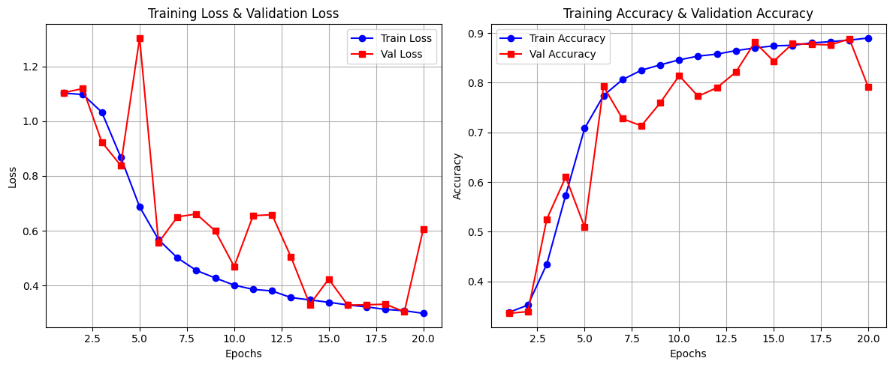

GravLensNet
 Code
Code
Overview
This project implements a Deep Residual Learning approach to classify Strong Gravitational Lensing images into three categories based on their substructure. A 20-layer ResNet model was trained on a dataset of 30,000 images (split across training, validation, and test sets). The model was optimized using data augmentation, L2 regularization, and a learning rate scheduler that reduces LR when validation loss plateaus.
The final trained model achieved an impressive 89.6% accuracy on the test set, with high AUC scores across all three classes, demonstrating robust classification performance for gravitational lensing substructure analysis.
Implementation Details
- Model Architecture: Custom 20-layer ResNet
- Dataset Size: 30,000 images (train/val/test split)
- Optimization: Data augmentation, L2 regularization, LR scheduler
- Training: 20 epochs on Google Colab's GPU
- Evaluation: Accuracy, Loss curves, ROC-AUC analysis
Results
Performance Metrics
| Metric | Value |
|---|---|
| Testset accuracy (best model) | 89.6% |
| AUC (Class 0 = 'no') | 0.987 |
| AUC (Class 1 = 'sphere') | 0.979 |
| AUC (Class 2 = 'vort') | 0.968 |

ROC Curves
Training Progress
Model Architecture
The custom ResNet architecture follows the implementation detailed in the seminal ResNet paper, adapted specifically for gravitational lensing classification. Key features include:
- 20 layers with residual connections
- Modified final layer for 3-class classification
Future Improvements
- Experiment with deeper architectures (50+ layers)
- Implement additional data augmentation techniques
- Explore ensemble methods for improved accuracy
- Investigate transfer learning from pre-trained models
Acknowledgements
- Research paper followed: Gravitational Lensing Classification Paper